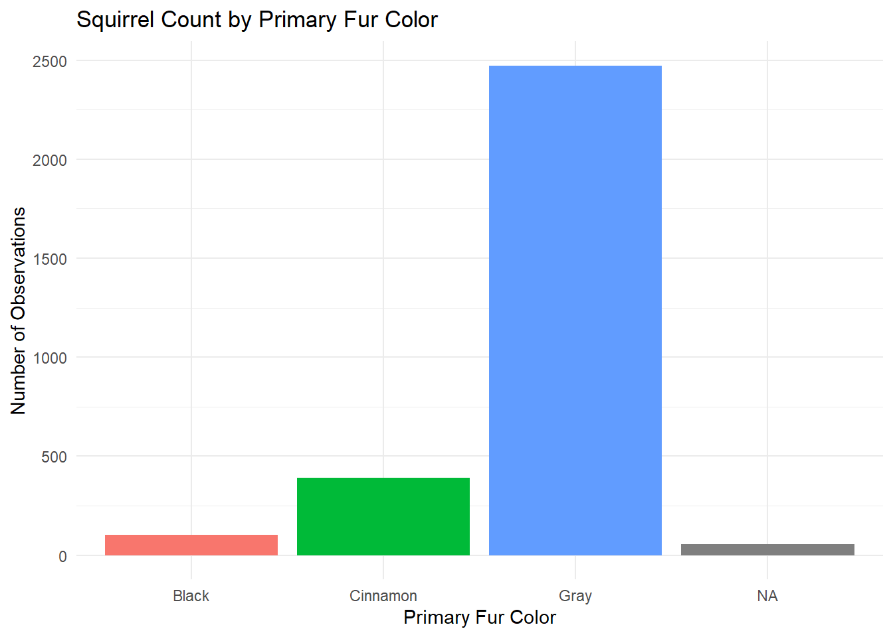
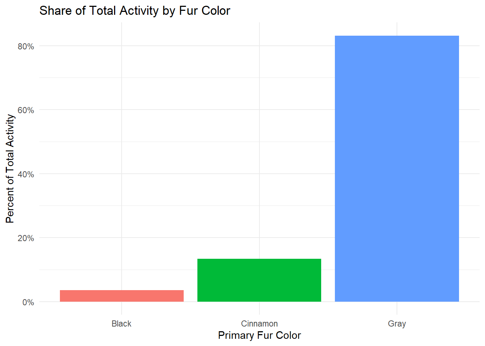
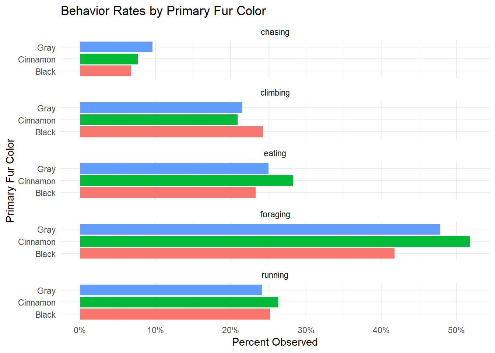
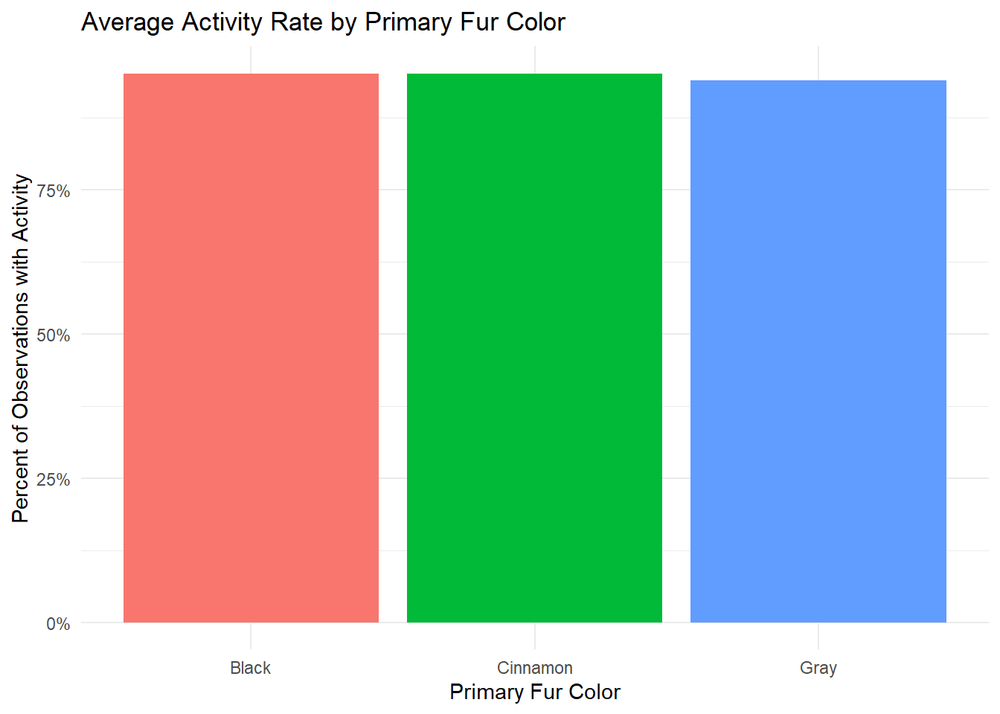

A binary “Active” squirrel column using the “Running,” “Chasing,” “Climbing,” “Eating,” and “Foraging” columns.
Convert the “Above Ground Sighter Measurement”, “x”, “y” columns to numeric (INT/FLOAT) values only.
The motivation to use this dataset is simple, I just chose the first interesting popular dataset I found on NYC OpenData. This encourages an exploratory approach, which might be useful when learning new skills.
Code-base
Below will contain the code broken by text which outlines my workflow and thought process as I was coding.
Body
library(tidyverse, ggplot2)
── Attaching core tidyverse packages ──────────────────────── tidyverse 2.0.0 ──
✔ dplyr 1.1.4 ✔ readr 2.1.6
✔ forcats 1.0.1 ✔ stringr 1.6.0
✔ ggplot2 4.0.1 ✔ tibble 3.3.1
✔ lubridate 1.9.4 ✔ tidyr 1.3.2
✔ purrr 1.2.1
── Conflicts ────────────────────────────────────────── tidyverse_conflicts() ──
✖ dplyr::filter() masks stats::filter()
✖ dplyr::lag() masks stats::lag()
ℹ Use the conflicted package (<http://conflicted.r-lib.org/>) to force all conflicts to become errors
# Original Dataurl <-"https://raw.githubusercontent.com/Siganz/data_607_week_1/refs/heads/main/data/2018_Central_Park_Squirrel_Census_Squirrel_Data_20260126.csv"# Read Datadf <-read.csv(url, stringsAsFactors =FALSE)# Optional, view first row (there's a lot of fields so it looks)df[1,]
Interesting that instead of using int/bool they used character. I would like to change that, while also creating vectors for the columns with different names.
# cols vector for field selection# removed Lat.Long because you can get point file from x/y alone.cols <-c("Unique.Squirrel.ID","Primary.Fur.Color","Highlight.Fur.Color","Combination.of.Primary.and.Highlight.Color","Running","Chasing","Climbing","Eating","Foraging","Above.Ground.Sighter.Measurement","X","Y")# Copydf2 <- df[ , cols]# Check matrixstr(df2)
I am using a for loop, this type of iteration is similar in python so it makes it simpler for me to remember. Now I would like to convert bool_cols into logical data types, using another loop.
for (col in bool_cols) { df2[[col]] <-as.logical(df2[[col]])}str(df2)
I don’t like that activity column is at the tail, so I would like to move it and also remove highlight_color and combination_color column since I don’t believe I’ll use them anymore.
I would like to check the unique’s of primary color, which I could use for (col in df2$primarycolor), but I’ll just use color_cols since I created it earlier.
# should return three lines, last two should just be NULLfor (col in color_cols){print(unique(df2[[col]]))}
[1] "" "Gray" "Cinnamon" "Black"
NULL
NULL
Now, I want to remove the empty string (““) and instead make it NA. I learned that using NULL in R would try and remove the rows.
Looks like int, except for FALSE and ““. So, we will look for any values %in% those and change them to”0” before converting to numeric. If this was a pipeline, I would build a function to normalize then find any non-numeric values.
This segment will contain some visuals and findings from the data.I used ggplot2 for the visuals, which I had an AI generate the code since I’m not too familiar with that package.
ggplot(df2, aes(x = primary_color, fill = primary_color)) +geom_bar() +labs(title ="Squirrel Count by Primary Fur Color",x ="Primary Fur Color",y ="Number of Observations" ) +theme_minimal() +theme(legend.position ="none")

This is a count of all observations against primary fur color, you’ll see that Gray’s are more populous than any other primary fur color (if we just look at this census data).
We can see that the largest observed activity was foraging, by a large magin. It seems like climbing, eating, and running are nearly identitical with a difference of less than 5%, with chasing the lowest, which is less than 10%.
Summary Table for All Behaviors
# Create a summary table for all behaviorsdo.call(rbind, lapply(bool_cols, function(col) { df2 %>%group_by(primary_color) %>%summarise(behavior = col,n_false =sum(get(col) ==FALSE, na.rm =TRUE),n_true =sum(get(col) ==TRUE, na.rm =TRUE),total =n(),.groups ='drop' )}))
This is a simple table that was generated to see the quantities of records with their column values and the sum of the logic values.
Share of Total Activity by Fur Color
counts <-aggregate( activity ~ primary_color,data = df2,FUN = sum,na.action = na.omit)counts$percent <- counts$activity /sum(counts$activity)ggplot(counts, aes(x = primary_color, y = percent, fill = primary_color)) +geom_col() +scale_y_continuous(labels = scales::percent) +labs(title ="Share of Total Activity by Fur Color",x ="Primary Fur Color",y ="Percent of Total Activity" ) +theme_minimal() +theme(legend.position ="none")

This graph outlines the percentage of recorded activity between primary fur classes. Gray absolutely dominates, but this is mainly due to the amount of records. I created this and left it here, because it could be interpreted incorrectly as Gray’s being more active than the other colors.
Behavior Rates by Primary Fur Color
# Calculate activity rates for all behaviorsactivity_rates <-do.call(rbind, lapply(bool_cols, function(col) { df2 %>%filter(!is.na(primary_color)) %>%# Remove NA colorsgroup_by(primary_color) %>%summarise(behavior = col,n_true =sum(get(col) ==TRUE, na.rm =TRUE),total =n(),activity_rate = n_true / total,.groups ='drop' )}))# Create the bar chartggplot(activity_rates, aes(x = primary_color, y = activity_rate, fill = primary_color)) +geom_col() +facet_wrap(~ behavior, ncol =1) +coord_flip() +scale_y_continuous(labels = scales::percent) +labs(title ="Behavior Rates by Primary Fur Color",x ="Primary Fur Color",y ="Percent Observed" ) +theme_minimal() +theme(legend.position ="none")

This graph is interesting because it visually shows that squirrels, regardless of their fur color, seem to have very similar activity rates. This is true of everything except foraging, so for that we can do this:
This behavior_dispersion shows the standard deviation of activity_rate (which is grouped by primary_color) to behavior. Foraging has 0.05 SD (5 percentage points), which has the strongest association with fur color than all other types of behaviors.
Average Activity Rate by Primary Fur Color
rates <-aggregate( activity ~ primary_color,data = df2,FUN = mean,na.action = na.omit)ggplot(rates, aes(x = primary_color, y = activity, fill = primary_color)) +geom_col() +scale_y_continuous(labels = scales::percent) +labs(title ="Average Activity Rate by Primary Fur Color",x ="Primary Fur Color",y ="Percent of Observations with Activity" ) +theme_minimal() +theme(legend.position ="none")

This one is pretty funny, I actually spent a good 30 minutes trying to figure out if my data was wrong, like if FALSE was somehow being aggregated, but it just turns out all the squirrels were very active!
Final Thoughts
Recommendations for the data would be to explore it further, like with more statistical analysis. I think the x/y coordinates would be interesting to see where in the park different color types of squirrels were recorded, and what parts of the park were there the most activity. A GIS map would be a great tool to help visualize this further.